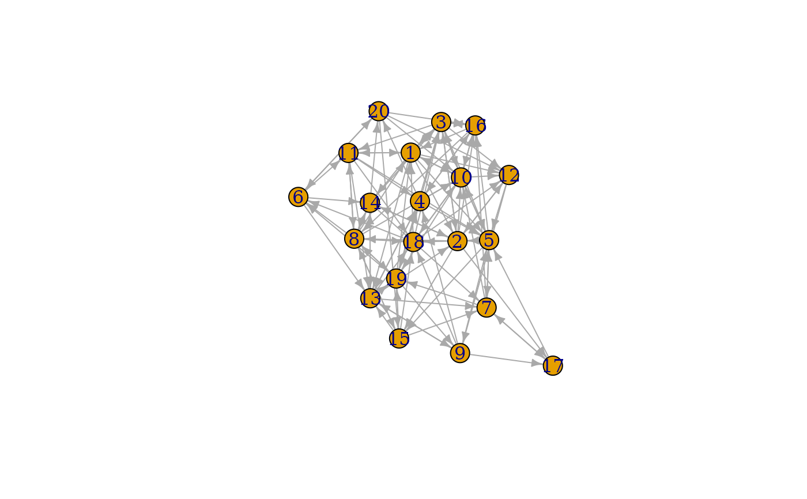

This set of graph games creates graphs directly through sampling of different attributes, topologies, etc. The nature of their algorithm is described in detail at the linked igraph documentation.
play_degree(out_degree, in_degree = NULL, method = "simple")
play_dotprod(position, directed = TRUE)
play_fitness(m, out_fit, in_fit = NULL, loops = FALSE, multiple = FALSE)
play_fitness_power(
n,
m,
out_exp,
in_exp = -1,
loops = FALSE,
multiple = FALSE,
correct = TRUE
)
play_gnm(n, m, directed = TRUE, loops = FALSE)
play_gnp(n, p, directed = TRUE, loops = FALSE)
play_geometry(n, radius, torus = FALSE)
play_erdos_renyi(n, p, m, directed = TRUE, loops = FALSE)Arguments
- out_degree, in_degree
The degrees of each node in the graph
- method
The algorithm to use for the generation. Either
'simple','vl', or'simple.no.multiple'- position
The latent position of each node by column.
- directed
Should the resulting graph be directed
- m
The number of edges in the graph
- out_fit, in_fit
The fitness of each node
- loops
Are loop edges allowed
- multiple
Are multiple edges allowed
- n
The number of nodes in the graph.
- out_exp, in_exp
Power law exponent of degree distribution
- correct
Use finite size correction
- p
The probabilty of an edge occuring
- radius
The radius within which vertices are connected
- torus
Should the vertices be distributed on a torus instead of a plane
Value
A tbl_graph object
Functions
play_degree(): Create graphs based on the given node degrees. Seeigraph::sample_degseq()play_dotprod(): Create graphs with link probability given by the dot product of the latent position of termintating nodes. Seeigraph::sample_dot_product()play_fitness(): Create graphs where edge probabilities are proportional to terminal node fitness scores. Seeigraph::sample_fitness()play_fitness_power(): Create graphs with an expected power-law degree distribution. Seeigraph::sample_fitness_pl()play_gnm(): Create graphs with a fixed edge count. Seeigraph::sample_gnm()play_gnp(): Create graphs with a fixed edge probability. Seeigraph::sample_gnp()play_geometry(): Create graphs by positioning nodes on a plane or torus and connecting nearby ones. Seeigraph::sample_grg()play_erdos_renyi():![[Deprecated]](figures/lifecycle-deprecated.svg) Create graphs
with a fixed edge probability or count. See
Create graphs
with a fixed edge probability or count. See igraph::sample_gnp()andigraph::sample_gnm()
See also
Other graph games:
component_games,
evolution_games,
type_games
Examples
plot(play_erdos_renyi(20, 0.3))
#> Warning: `play_erdos_renyi()` was deprecated in tidygraph 1.3.0.
#> ℹ Please use `play_gnp()` instead.
